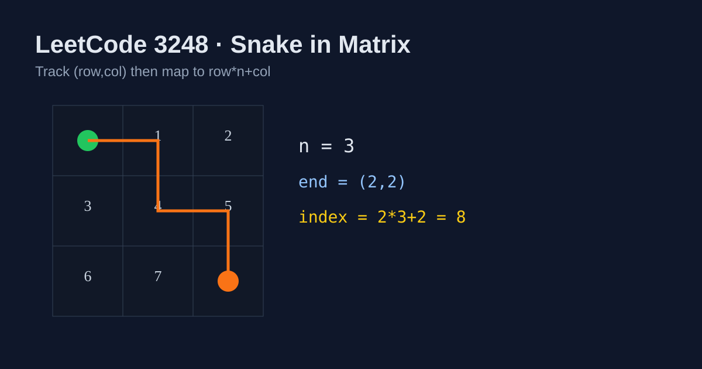

LeetCode 3248: Snake in Matrix (Coordinate Simulation to 1D Index)
LeetCode 3248SimulationMatrixToday we solve LeetCode 3248 - Snake in Matrix.
Source: https://leetcode.com/problems/snake-in-matrix/

English
Problem Summary
You are given an n x n matrix where cells are numbered in row-major order from 0 to n*n-1. A snake starts at cell (0, 0) and receives movement commands (UP, DOWN, LEFT, RIGHT). Return the number of the final cell.
Key Insight
The moves naturally update 2D coordinates (row, col). Once all commands are processed, convert coordinate to value using row-major mapping: row * n + col.
Algorithm
- Initialize row = 0, col = 0.
- For each command:
• UP => row--
• DOWN => row++
• LEFT => col--
• RIGHT => col++
- Return row * n + col.
Complexity Analysis
Let m be the number of commands.
Time: O(m).
Space: O(1).
Reference Implementations (Java / Go / C++ / Python / JavaScript)
class Solution {
public int finalPositionOfSnake(int n, List<String> commands) {
int row = 0, col = 0;
for (String cmd : commands) {
if (cmd.equals("UP")) row--;
else if (cmd.equals("DOWN")) row++;
else if (cmd.equals("LEFT")) col--;
else col++; // RIGHT
}
return row * n + col;
}
}func finalPositionOfSnake(n int, commands []string) int {
row, col := 0, 0
for _, cmd := range commands {
if cmd == "UP" { row--
} else if cmd == "DOWN" { row++
} else if cmd == "LEFT" { col--
} else { col++ }
}
return row*n + col
}class Solution {
public:
int finalPositionOfSnake(int n, vector<string>& commands) {
int row = 0, col = 0;
for (const string& cmd : commands) {
if (cmd == "UP") row--;
else if (cmd == "DOWN") row++;
else if (cmd == "LEFT") col--;
else col++; // RIGHT
}
return row * n + col;
}
};class Solution:
def finalPositionOfSnake(self, n: int, commands: List[str]) -> int:
row = col = 0
for cmd in commands:
if cmd == "UP": row -= 1
elif cmd == "DOWN": row += 1
elif cmd == "LEFT": col -= 1
else: col += 1
return row * n + colvar finalPositionOfSnake = function(n, commands) {
let row = 0, col = 0;
for (const cmd of commands) {
if (cmd === "UP") row--;
else if (cmd === "DOWN") row++;
else if (cmd === "LEFT") col--;
else col++;
}
return row * n + col;
};中文
题目概述
给定一个 n x n 矩阵，单元格按行优先编号为 0 到 n*n-1。蛇从 (0, 0) 出发，按命令序列（UP、DOWN、LEFT、RIGHT）移动。返回最终所在单元格的编号。
核心思路
命令本质是更新二维坐标 (row, col)。全部移动结束后，用行优先公式把坐标映射回编号：row * n + col。
算法步骤
- 初始化 row = 0、col = 0。
- 遍历每条命令并更新坐标：
• UP => row--
• DOWN => row++
• LEFT => col--
• RIGHT => col++
- 最后返回 row * n + col。
复杂度分析
设命令数量为 m。
时间复杂度：O(m)。
空间复杂度：O(1)。
多语言参考实现（Java / Go / C++ / Python / JavaScript）
class Solution {
public int finalPositionOfSnake(int n, List<String> commands) {
int row = 0, col = 0;
for (String cmd : commands) {
if (cmd.equals("UP")) row--;
else if (cmd.equals("DOWN")) row++;
else if (cmd.equals("LEFT")) col--;
else col++; // RIGHT
}
return row * n + col;
}
}func finalPositionOfSnake(n int, commands []string) int {
row, col := 0, 0
for _, cmd := range commands {
if cmd == "UP" { row--
} else if cmd == "DOWN" { row++
} else if cmd == "LEFT" { col--
} else { col++ }
}
return row*n + col
}class Solution {
public:
int finalPositionOfSnake(int n, vector<string>& commands) {
int row = 0, col = 0;
for (const string& cmd : commands) {
if (cmd == "UP") row--;
else if (cmd == "DOWN") row++;
else if (cmd == "LEFT") col--;
else col++; // RIGHT
}
return row * n + col;
}
};class Solution:
def finalPositionOfSnake(self, n: int, commands: List[str]) -> int:
row = col = 0
for cmd in commands:
if cmd == "UP": row -= 1
elif cmd == "DOWN": row += 1
elif cmd == "LEFT": col -= 1
else: col += 1
return row * n + colvar finalPositionOfSnake = function(n, commands) {
let row = 0, col = 0;
for (const cmd of commands) {
if (cmd === "UP") row--;
else if (cmd === "DOWN") row++;
else if (cmd === "LEFT") col--;
else col++;
}
return row * n + col;
};
Comments